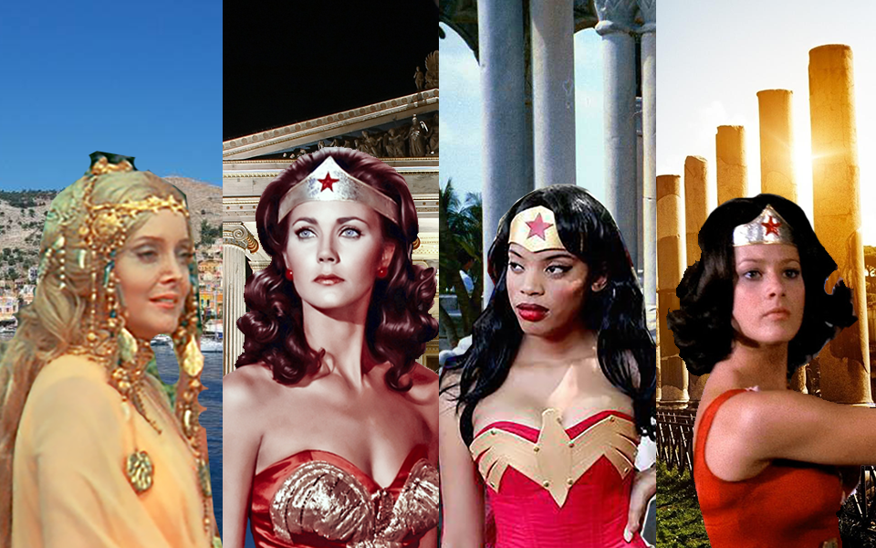
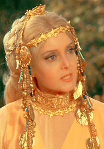
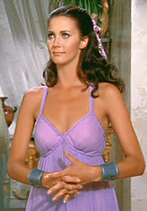
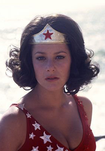

The Royal Family




The Royal Family of Themiscara consists of Queen Hippolyta, and her daughters, Princess Diana, Princess Nubia, and Princess Donna.
Queen Hippolyta
has lead the Amazons for over 3,000 years. With her golder girdle given to her by the Greek Gods, she has been a peaceful ruler of the Themiscara nation and the the Islands within it. Hippolyte and the Amazons once resided in "Amazonia" in the days of ancient Greece, until they were beguiled and bested by the demi-god Hercules, who had been sent after her by the God of War Ares. She was able to beat him using the girdle, but he seduced her, and tricked her into allowing him to see the girdle, allowing him to steal it. This caused them to lose the favor of their patron goddess, Aphrodite. Eventually she and the other Amazons were forgiven, but had to wear bracelets to remind them of the chains which once bound them. To regain their status, the Amazons were forced to leave the mortal world and relocate to Paradise Island. There they established their own society, free from the evils of man's world. She is devoted to the Olympian goddesses, particularly the Amazons' patron Aphrodite, and was adamant that man never be allowed to set foot on Paradise Island.
Princess Diana
first daughter and successor of the throne is an ambassador to Man's World. When she is not flying over the main island, you can often find her training in the Sports Coliseum.
Princess Nubia
second daughter and Captain of the Guards is a olympic athlete. When she is not teaching archery, you can often find her leading the conga line at the discotheque.